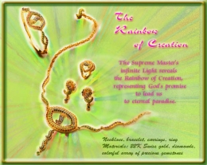

L'arc-en-ciel de la Création La lumière infinie du Maître Suprême révèle l'arc-en-ciel de la Création, représentant la promesse de Dieu de nous conduire au Paradis éternel. Collier, bracelet, boucles d'oreilles, et bague

En or suisse 22 carats, diamants, un arrangement coloré de pierres précieuses